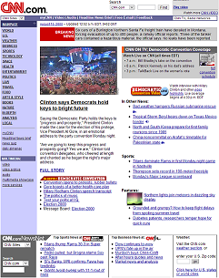
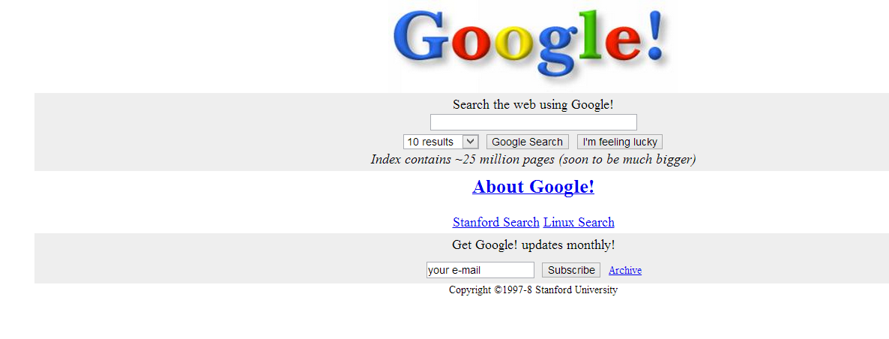
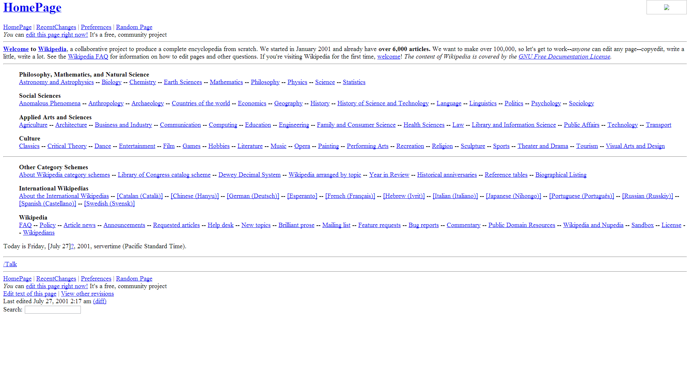

Timeline of News Media in the Digital Age
Mid-Late 1995
- Newsweek publishes article predicting the internet’s failure to gather supporters.
- Early reports of Oklahoma City Bombing and September 11th terrorist attacks appear online. The speed at which the news was reported helped showcase the internet’s potential for news.
- CNN.com is published and quickly becomes one of the most popular news websites.
1997
- The web reaches a total of one million websites.
- The first blogs emerge including Robot Wisdom and Scripting News.

1998
- Google Search Engine is founded
1999
- Websites begin to use Rich Site Summary to fix email-distribution problems, but it quickly becomes a method of viewing news articles.

2000
- The dot-com bubble burst occurs. Internet-based companies use the rise of the internet to justify risky business practices, and unsustainable practices cause stock market drops and a small economic recession.
2001
- The encyclopedia Wikipedia goes online.
2003
- Wordpress launches as a publishing platform meant to hold blogs.
2005
- Arianna Huffington, Jonah Peretti, and Kenneth Lerer found the Huffington Post.

2006
- In 6 months, the number of readers of daily newspapers shrank by 1.2 million to a total of 45.5 million. Online newspaper readership grew to a total of 56 million readers.
2007
- Amazon introduces the Kindle, a digital reading device.
2010
- Apple debuts the iPad, a tablet computer suited for e-book reading and web browsing.
2013
- Time Magazine cuts 5% of reporting staff amid company layoffs.